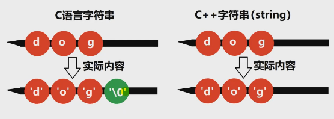
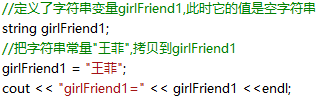
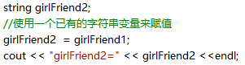
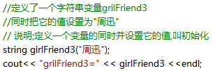
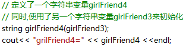
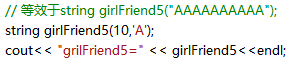

string
string库导入(string.h库是c的)
在std空间，std::string(c语言用char[]表示)
char name[32] = "cu"; //等同于char name[32] = {'c', 'u', '\0'}
字符串长度(是指英文字符个数)
""是空字符串，长度为0
" "空格字符串，长度为1
"我爱你"字符串长度不是3，是6或9(在某些编码中，一个汉字占用2个字节，有些编码占3个字节)
实际存储
使用





string.empty();//是否为空,返回bool
string.length() | string.size();//获取字符串长度
另类用法
string name = "cum";
name[2] = "p"; //name变成cup
string.substr(a,l);//从a下标开始，截取l长度的字符串
string.substr(a);//从a下标开始到结尾截取